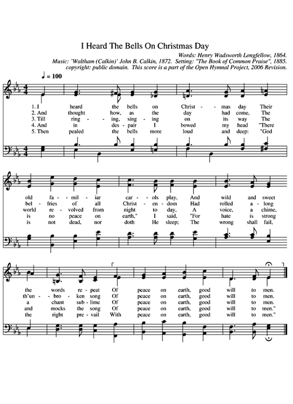
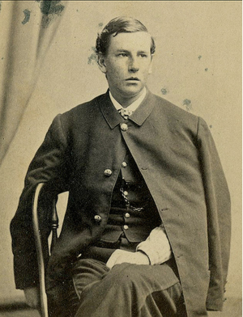

I heard the bells on Christmas day | |
| 1 I heard the bells on Christmas day Their old familiar carols play, And wild and sweet the words repeat Of peace of earth, good will to men.
| 圣诞佳期，我闻钟声， |
 
| |
I heard the bells on Christmas day | |
| 1 I heard the bells on Christmas day Their old familiar carols play, And wild and sweet the words repeat Of peace of earth, good will to men.
| 圣诞佳期，我闻钟声， |
|

| |
1863年3月，18岁的查尔斯·阿普尔顿·朗费罗（Charles Appleton Longfellow）从他在马萨诸塞州剑桥市普雷多街的家（Brattle Street, Cambridge, Massachusetts）走出——在家人都不知道的情况下——踏上开往华盛顿哥伦比亚特区的列车，沿着东海岸往南400英里，要加入南北战争中林肯总统率领的联邦军队。

查尔斯·朗费罗（生于1844年6月9日）是范妮·伊丽莎白·阿普尔顿（Fannie Elizabeth Appleton）和著名文学评论家、诗人亨利·沃兹沃斯·朗费罗（Henry Wadsworth Longfellow）的六个孩子中的长子。查尔斯有五个弟妹：一个弟弟（17岁），三个妹妹（分别是13岁、10岁、8岁——还有一个夭折了）。
一年多前，查尔斯的母亲范妮因衣服着火而悲惨丧生。她的丈夫从小睡中醒来，先用地毯，然后用自己的身体，奋力试图灭火，但她的烧伤已经十分严重了。范妮于隔天上午去世（1861年7月10日）。亨利·朗费罗的脸部也受到严重灼伤，他甚至无法参加妻子的丧礼。后来，为了遮掩脸部的烧伤他留着长胡须。有时，他害怕因为过度悲伤而被送进精神病院。
尔斯抵达华盛顿特区后，他希望入伍成为马萨诸塞州第一炮兵团的列兵。炮兵A连的指挥官麦卡尼（W. H. McCartney）于是写信给亨利·沃兹沃斯·朗费罗，要得到他准许儿子查尔斯从军的书面同意。HWL（他儿子这样称呼他）同意了。
后来，父亲写信给他的朋友查尔斯·萨姆纳（Charles Sumner，马萨诸塞州参议员），约翰·安德鲁（John Andrew，马萨诸塞州州长）和爱德华兹·道尔顿（Edward Dalton，陆军第六兵团的医务视察员），想要让他的儿子成为军官。但在那之前，查尔斯的能力早已受到同伴和长官的欣赏，并于1863年3月27日获授少尉军衔，任职于马萨诸塞州第一骑兵团G连。
在参加弗吉尼亚州钱斯勒斯维尔战役（1863年4月30日至5月6日）后，查尔斯感染伤寒被送回家休养。他于1863年8月15日重新归队，但错过了盖茨堡战役（Battle of Gettysburg，1863年7月1日至3日，南北战争的转折点）。
1863年12月1日，亨利·朗费罗在吃晚饭的时候，收到电报说他的儿子4天前严重负伤。1863年11月27日，在雷奔之役（battle of of the Mine Run Campaign）的短兵相接中，查尔斯被子弹击中。子弹从左肩膀射入，从右肩胛飞出，穿过他的背并擦过脊椎。子弹射中位置离要害不到一英寸，查尔斯因此幸免，没有全身瘫痪。

他被抬进新希望教会（New Hope Church，在弗吉尼亚州橘郡），而后被送往拉皮丹河（the Rapidan River）。查尔斯的父亲和弟弟欧内斯特（Ernest）立即赶往华盛顿特区，并于12月3日抵达。查尔斯于12月5日由火车送达。亨利·沃兹沃斯·朗费罗从陆军军医那里得知他儿子的伤势“十分严重”，而且“瘫痪有可能接踵而至”后十分惊恐。但那天晚上三位外科医生的报告令他略微心安，他们提出伤势在“长期休养”至少六个月后可以恢复。
1863年圣诞节，朗费罗——一位带着6个孩子的57岁鳏夫，其中长子在内战战役中几近瘫痪——写了一首诗，抒发了他内心的冲击与挣扎以及他所见的周遭世界。他听到圣诞节的钟声和咏唱“地上平安”（路加福音2:14）的诗歌，但他所见的世界充满了不平和强暴。这些不平和强暴似乎在嘲笑这种乐观景况的真实性。这个主题在诗中不断出现，最终引出一个在暗淡绝望中仍充满盼望的确信。
整首诗如下，你可以听卡罗琳·科布（Caroline Cobb）和肖恩·卡特（Sean Carter）的音频：
圣诞佳期，我闻钟声，
鸣奏昔日，圣歌再呈；
和谐甘甜，词意重温，
地上平安，万民蒙恩。
我每想念，佳期快临，
基督王国，播出佳音；
歌声四响，悠扬动心，
地上平安，万民蒙恩。
伴随钟铃，歌声洋溢，
普世欢腾直到天明；
一唱一咏，庄严吟颂，
地上平安，万民蒙恩。
可恨每一漆黑炮口，
传来南方，隆隆轰声；
轰鸣声响，淹没颂歌，
地上平安，万民蒙恩。
仿佛突发，山崩地裂，
陆地基石，震动移位；
濒临悲惨，家家户户，
地上平安，万民蒙恩。
绝望时候，丧气垂首，
地无平安，我心烦忧；
仇恨方殷，嘲笑纷纷，
何来平安，谁人蒙恩。
洪钟击响，大声宣告，
神不打盹，也不睡觉；
邪恶必败，公义来到，
地上平安，万民蒙恩。
编注：《圣诞钟声》诗歌词谱如下，不包含南北战争背景过重的第4、5段歌词。
http://www.sinovision.net/home/space/do/blog/uid/388329/id/328682.html
《圣诞钟声》这首圣诞颂歌是美国著名诗人亨利·沃兹沃思·朗费罗(Henry Wadsworth Longfellow) 在 1864 年怀着悲痛之心写的。这首诗歌有七段歌词，每一段都以同一句喜讯为中心：“世人蒙恩，在地上平安归与祂所喜悦的人！”
这个喜讯出于圣经里的路加福音第二章 13-14 节：
两千多年前最先听到天使为世上万民报告这大喜消息的竟然是在伯利�痝它a里的牧羊人。他们更亲眼见到了那位能把平安带给世人的救主基督，祂降世为婴孩的模样。这句含有福音的歌词在今天的世界里是一种讽刺呢，还是可靠的盼望？
让我们一块儿来听听诗人朗费罗坦白的心声。
经文：
路加福音1章79节
“要照亮坐在黑暗中死荫里的人，把我们的脚引到平安的路上”。
路加福音2章8-14节
在伯利�琱妊它a里有牧羊的人，夜间按着更次看守羊群。有主的使者站在他们旁边，主的荣光四面照着他们；牧羊的人就甚惧怕。那天使对他们说：不要惧怕！我报给你们大喜的信息，是关乎万民的；因今天在大卫的城里，为你们生了救主，就是主基督。你们要看见一个婴孩，包着布，卧在马槽里，那就是记号了。忽然，有一大队天兵同那天使赞美神说：在至高之处荣耀归与神！在地上平安归与他所喜悦的人（有古卷作：喜悦归与人）！
朗费罗深通多种语言，因为拉近了欧美文化的距离而被誉为美国最伟大的诗人。他的创作包括宏伟的叙事诗和不同的诗篇诗集，那些诗常带着音乐特质。但是在美国内战的初期朗费罗经历了非常悲惨的遭遇。1861那年七月九日他的妻子范妮因为一场家中发生的火灾被烧伤，第二天过世。
她死后的第一个圣诞节，朗费罗写下这句话: “所有的节日都充斥着无法言语的哀伤。”丧妻一年以后，他写下这样的话： “这些时日不堪记述。 我只能任由沉默把这些日子包住。或许有那么一天神会让我的心灵得到安宁。”
1863 年三月朗费罗的长子查理离家从军，投入美国内战的战火。十一月底在雷奔之役中他受枪击，几乎有瘫痪之危。直到1864 年十二月内战战情才缓下来，然而有50万军兵已血洒战场。而且在战争完全结束前还会有更多战士牺牲他们的生命。对朗费罗来说，周遭的世界反映着他内心的挣扎与悲伤。那个圣诞节，他再度听到宏伟又亲切的钟声，和圣诞歌里平安的祝福。在痛苦与盼望交集的心境中朗费罗写下这一首动人的圣诞颂诗，后来得到众人的喜爱。
《圣诞钟声》的歌词以盼望的语气起首：
圣诞佳节我闻钟声
古老熟悉圣诞颂歌
响亮悦耳，反复述说
世人蒙恩，
地上平安归祂所喜悦的人！
每逢思想这日临近
世上基督教堂钟楼
阵阵鸣响，不断歌颂
世人蒙恩，
地上平安静祂所喜悅的人！
但是朗费罗忍不住内心的哀伤，眼见战争流血的惨痛，又写了下面这段歌词：
在绝望中低头垂首
我说世上并无平安
仇恨当道，嘲笑颂歌
世人蒙恩，
地上平安归祂所喜悦的人！
这些话似乎活活地印证了现今我们所面对的世界：仇恨当道。 在圣诞时节我们的盼望哪里找呢？下面这段歌词就是我们的答案：
深洪钟声响亮宣称
神不打盹也不睡觉
邪恶将尽，公义必来
世人蒙恩，
地上平安归祂所喜悦的人！
追根究底，圣诞节的意义就是：最后的凯旋归于神。
当年在伯利��诞生在马槽里的那个名叫耶稣的婴儿，祂小小的生命却负者天大的使命！然而这世界完全不知道在伯利��发生的大事。
经文： 马太福音第一章 18-25 节
耶稣基督降生的事记在下面：祂母亲马利亚已经许配了约瑟，还没有迎娶，马利亚就从圣灵怀了孕。她丈夫约瑟是个义人，不愿意明明的羞辱她，想要暗暗的把她休了。正思念这事的时候，有主的使者向他梦中显现，说：大卫的子孙约瑟，不要怕！只管娶过你的妻子马利亚来，因她所怀的孕是从圣灵来的。她将要生一个儿子，你要给祂起名叫耶稣，因祂要将自己的百姓从罪恶里救出来。这一切的事成就是要应验主藉先知所说的话，说：必有童女怀孕生子；人要称祂的名为以马内利。（以马内利翻出来就是神与我们同在。）约瑟醒了，起来，就遵着主使者的吩咐把妻子娶过来；只是没有和她同房，等她生了儿子（有古卷：等她生了头胎的儿子），就给祂起名叫耶稣。
路加福音2章1-7节
当那些日子，该撒亚古士督有旨意下来，叫天下人民都报名上册。这是居里扭作叙利亚巡抚的时候，头一次行报名上册的事。众人各归各城，报名上册。约瑟也从加利利的拿撒勒城上犹太去，到了大卫的城，名叫伯利�琚A因他本是大卫一族一家的人，要和他所聘之妻马利亚一同报名上册。那时马利亚的身孕已经重了。他们在那里的时候，马利亚的产期到了，就生了头胎的儿子，用布包起来，放在马槽里，因为客店里没有地方。
世人后来才发现耶稣降生这件事情的重大意义——先知的预言已经实现，神的救赎计划已在地上展开。原来神要将世人从罪与死当中释放出来，祂选择了伯利�琝@为反击撒但魔鬼的第一个战场， 而且领在战线最前方的就是这个幼小的婴儿战士。
这场为解救失丧灵魂的征战持续到今天仍在进行。可别轻看这小小婴孩，在祂里头拥有至圣者的一切力量。祂的小拳头拥有上帝的大能。祂有出自天上的神能。祂想做任何事，都能成就。
这个圣婴在领导天国的军队。朗费罗说得很对：
“邪恶将尽，公义必来
世人蒙恩，
地上平安归祂所喜悦的人！“
天父，在这破碎的世界，仇恨这么猖狂，我们迫切地需要平安。谢谢祢赐给我们和平之君主耶稣。求祢帮助我们作平安的使者，不作仇恨的挑衅者。奉主耶稣基督圣名， 阿们。
很遗憾，这首诗歌没能找到中文的视频。
https://hymnary.org/text/i_heard_the_bells_on_christmas_day
The inspiration for this hymn, like Horatio Spafford’s “It is Well With my Soul,” came out of tragedy and remorse. Henry Wadsworth Longfellow, having an injured son and a dead wife, wrote his poem “Christmas Bells” on Christmas Day. The third verse, which says, “And in despair, I bowed my head: ‘There is no peace on earth,’ I said, ‘For hate is strong and mocks the song Of peace on earth, good will to men,’” shows the depth of despair Longfellow experienced. The fourth verse shows the faith and hope in God that Longfellow had in the face of despair.
The text for this hymn is based off of Henry Wadsworth Longfellow’s 1863 poem, “Christmas Bells.” The poem itself was inspired by several painful events in Longfellow’s life. For one, his son Charles joined the Union army without telling Henry before he left. Eventually, Charles was severely wounded in battle. Around the same time, Longfellow’s wife, Frances, tragically died from an accidental fire, which left Henry badly burned as well. Longfellow wrote his poem on Christmas Day, telling of the despair in his heart as he heard the Christmas bells play. Fortunately, this poem ends on an encouraging note, emphasizing hope and peace among men, despite the troubles of the world.
The tune WALTHAM was written by John Baptiste Calkin in 1872, during his time as the organist at St. Thomas’s Church in Camden Town. WALTHAM was written for Longfellow’s poem, and became Calkin’s best-known work. Although this tune is primarily used in “I Heard the Bells on Christmas Day,” it has been paired with several other texts across the years.
As implied by the name, this song should be played in the Christmas season.
Suggested music:
https://www.umcdiscipleship.org/resources/i-heard-the-bells-on-christmas-day
I Heard the Bells on Christmas Day
Words: Henry Wadsworth Longfellow, 1864 Music: Tune, WALTHAM, by John Baptiste Calkin, 1872
American poet Henry Wadsworth Longfellow wrote his poem, "Christmas Bells," at the height of the Civil War in 1863. Against his father's wishes, Longfellow's son joined the war and was severely wounded in the Battle of New Hope Church in Virginia. Shortly prior to his son's being wounded, Longfellow's wife had died in a fire. Longfellow wrote "Christmas Bells" on Christmas Day of 1863. The text tells of hearing the bells ring on Christmas Day, but instead of the message of "peace on earth, good will to men," the message is a strong one of hate that mocks such a song. The text ends, however, with a final ringing of the bells that proclaims the message that God is alive, that right will prevail with peace on earth and good will to men.
There are two stanzas related to the Civil War that are customarily omitted from the hymn:
Then from each black, accursed mouth
The cannon thundered in the South,
And with the sound
The carols drowned
Of peace on earth, good-will to men!
It was as if an earthquake rent
The hearth-stones of a continent,
And made forlorn
The households born
Of peace on earth, good-will to men!
"I Heard the Bells on Christmas Day" (Sibelius)"I Heard the Bells on Christmas Day" (Sibelius)
"I Heard the Bells on Christmas Day" (pdf)
| 亨利·華茲華斯·朗費羅 | |
|---|---|
 亨利·華茲華斯·朗費羅肖像，由茱莉亞·瑪格麗特·卡梅隆拍攝於1868年 | |
| 出生 | 1807年2月27日 |
| 逝世 | 1882年3月24日（75歲） |
| 職業 | 詩人 教授 |
| 文學運動 | 浪漫主義 |
| 簽名 | |
亨利·華茲華斯·朗費羅（Henry Wadsworth Longfellow，1807年2月27日－1882年3月24日），美國詩人、翻譯家。爐邊詩人之一。
美国诗人朗费罗（Henry Wadsworth Longfellow)诗选
其父親是個律師，母親尤愛誦讀詩歌。他們養育了四男四女，亨利排行第二，其性格秉承父母的氣質。
在家庭氣氛薰陶下，亨利自小喜愛詩歌和語言，後來入緬因州鮑登學院攻讀語言和文學（納撒尼爾·霍桑是其同班同學），並兩度赴歐學習法、義、德、丹麥、瑞典和荷蘭等語言，二十八歲即任哈佛大學現代語言教授。
世界上第一首譯為中文的英語詩是朗費羅的《人生頌》。時任大清國總理各國事務衙門全權大臣的董恂曾將《人生頌》書於扇面，並轉交給遠在波士頓的朗費羅，此扇現存於朗費羅故居。
| 維基文庫中該作者的作品： 亨利·華茲華斯·朗費羅 |
| 維基語錄上的相關摘錄： 亨利·華茲華斯·朗費羅 |
| 維基共享資源中相關的多媒體資源：亨利·華茲華斯·朗費羅 |
https://en.wikipedia.org/wiki/Henry_Wadsworth_Longfellow
同义词 朗费罗一般指亨利·沃兹沃斯·朗费罗
1839年朗费罗出版了两本书。《许珀里翁》，这是一部散文体传奇文学，反映了他旅居德国时的生活。《夜吟》，是他的第一部诗集。在他的诗集《歌谣及其他》（1841年）中，有一些广为人们所引用的诗篇，如《乡下铁匠》、《金星号遇难》、《向更高处攀登》以及《铠甲骷髅》等。1842年，朗费罗又一次出国，在返程途中他写了《奴役篇》。尽管朗费罗是一个坚定的废奴主义者，但他写的反对奴隶制度的诗歌却不像约翰·格林立夫·惠蒂埃那样激烈。
https://www.wigi.wiki/wiki/zh/Christmas_song
https://en.wikipedia.org/wiki/Christmas_music
圣诞音乐包括在圣诞节期间定期演奏或听到的各种类型的音乐。与圣诞节相关的音乐可以是纯器乐，或在案件颂歌或歌曲可以使用其歌词题材的范围是从耶稣诞生的耶稣基督，以礼品-giving和欢乐，文化人物如圣诞老人等议题。许多歌曲只是有一个冬天或季节性的主题，或者由于其他原因被采纳到正典中。
虽然 1930 年之前的大多数圣诞歌曲都具有传统的宗教特征，但1930 年代的大萧条时期带来了一系列源自美国的歌曲，其中大部分没有明确提及这个节日的基督教性质，而是更世俗的传统与圣诞节相关的西方主题和习俗。这些收录的歌曲针对儿童的，如“圣诞老人是全身心地镇‘和’鲁道夫的红鼻子驯鹿”，以及感伤的民谣式歌曲由著名进行男低音的时代，如“自己已经一个风流Little Christmas ”和“ White Christmas ”，后者仍然是 2018 年有史以来最畅销的单曲。[1] [2] Elvis' Christmas Album (1957) by Elvis Presley是最畅销的圣诞专辑一直以来，全球销量超过 2000 万份。[3]
在公共音乐会、教堂、购物中心、城市街道和私人聚会中演奏圣诞音乐是世界各地许多文化中圣诞假期不可或缺的主要内容。广播电台通常会在假期前转换为 24-7 的圣诞音乐格式，有时早在万圣节后的第二天就开始播放——这是一种被称为“圣诞节蠕动”的现象的一部分。
最早的基督教聖誕頌歌出自4世紀的古羅馬。例如由米蘭大主教安波羅修作成的拉丁語頌歌《Veni redemptor gentium》。西班牙詩人普魯登修斯寫成的《Corde natus ex Parentis》依然迴響在在一些教堂中。[1]
13世紀，在法國、德國、特別是義大利，因亞西西的方濟各的影響，傳統聖誕頌歌開始被翻譯為本土語言。[2] 最早的英文頌歌出現在1426年什羅普郡牧師John Audelay的作品中，共25首。[3]
宗教改革之後在新教國家，聖誕頌歌愈發流行。[4] 現代聖誕頌歌多用於基督教宗教服務。不過一些作曲家所作的曲子儘管沒有宗教內涵，但依然叫做「頌歌」。[5]
Christmas music comprises a variety of genres of music regularly performed or heard around the Christmas season. Music associated with Christmas may be purely instrumental, or, in the case of carols or songs, may employ lyrics whose subject matter ranges from the nativity of Jesus Christ, to gift-giving and merrymaking, to cultural figures such as Santa Claus, among other topics. Many songs simply have a winter or seasonal theme, or have been adopted into the canon for other reasons.
While most Christmas songs prior to 1930 were of a traditional religious character, the Great Depression era of the 1930s brought a stream of songs of American origin, most of which did not explicitly reference the Christian nature of the holiday, but rather the more secular traditional Western themes and customs associated with Christmas. These included songs aimed at children such as "Santa Claus Is Comin' to Town" and "Rudolph the Red-Nosed Reindeer", as well as sentimental ballad-type songs performed by famous crooners of the era, such as "Have Yourself a Merry Little Christmas" and "White Christmas", the latter of which remains the best-selling single of all time as of 2018.[1][2] Elvis' Christmas Album (1957) by Elvis Presley is the best-selling Christmas album of all time, selling more than 20 million copies worldwide.[3]
Performances of Christmas music at public concerts, in churches, at shopping malls, on city streets, and in private gatherings is an integral staple of the Christmas holiday in many cultures across the world. Radio stations often convert to a 24-7 Christmas music format leading up to the holiday, starting sometimes as early as the day after Halloween – as part of a phenomenon known as "Christmas creep".
Music associated with Christmas is thought to have its origins in 4th-century Rome, in Latin-language hymns such as Veni redemptor gentium.[4] By the 13th century, under the influence of Francis of Assisi, the tradition of popular Christmas songs in regional native languages developed.[5] Christmas carols in the English language first appear in a 1426 work of John Awdlay, an English chaplain, who lists twenty five "caroles of Cristemas", probably sung by groups of wassailers who would travel from house to house.[6] In the 16th century, various Christmas carols still sung to this day, including "The 12 Days of Christmas", "God Rest You Merry, Gentlemen", and "O Christmas Tree", first emerged.[7]
Music was an early feature of the Christmas season and its celebrations. The earliest examples are hymnographic works (chants and litanies) intended for liturgical use in observance of both the Feast of the Nativity and Theophany, many of which are still in use by the Eastern Orthodox Church. The 13th century saw the rise of the carol written in the vernacular, under the influence of Francis of Assisi.
In the Middle Ages, the English combined circle dances with singing and called them carols. Later, the word carol came to mean a song in which a religious topic is treated in a style that is familiar or festive. From Italy, it passed to France and Germany, and later to England. Christmas carols in English first appear in a 1426 work of John Audelay, a Shropshire priest and poet, who lists 25 "caroles of Cristemas", probably sung by groups of wassailers, who went from house to house.[8] Music in itself soon became one of the greatest tributes to Christmas, and Christmas music includes some of the noblest compositions of the great musicians.
During the Commonwealth of England government under Cromwell, the Rump Parliament prohibited the practice of singing Christmas carols as Pagan and sinful. Like other customs associated with popular Catholic Christianity, it earned the disapproval of Protestant Puritans. Famously, Cromwell's interregnum prohibited all celebrations of the Christmas holiday. This attempt to ban the public celebration of Christmas can also be seen in the early history of Father Christmas.
The Westminster Assembly of Divines established Sunday as the only holy day in the calendar in 1644. The new liturgy produced for the English church recognized this in 1645, and so legally abolished Christmas. Its celebration was declared an offense by Parliament in 1647.[9] There is some debate as to the effectiveness of this ban, and whether or not it was enforced in the country.[9]
Puritans generally disapproved of the celebration of Christmas—a trend which continually resurfaced in Europe and the USA through the eighteenth, nineteenth and twentieth centuries.[10]
When in May 1660 Charles II restored the Stuarts to the throne, the people of England once again practiced the public singing of Christmas carols as part of the revival of Christmas customs, sanctioned by the king's own celebrations.[9]
The Victorian Era saw a surge of Christmas carols associated with a renewed admiration of the holiday, including "Silent Night", "O Little Town of Bethlehem", and "O Holy Night". The first Christmas songs associated with Saint Nicholas or other gift-bringers also came during 19th century, including "Up on the Housetop" and "Jolly Old St. Nicholas".[11] Many older Christmas hymns were also translated or had lyrics added to them during this period, particularly in 1871 when John Stainer published a widely influential collection entitled "Christmas Carols New & Old".[11] William Sandys's Christmas Carols Ancient and Modern (1833), contained the first appearance in print of many now-classic English carols, and contributed to the mid-Victorian revival of the holiday.[12] Singing carols in church was instituted on Christmas Eve 1880 (Nine Lessons and Carols) in Truro Cathedral, Cornwall, England, which is now seen in churches all over the world.[13]
According to one of the only observational research studies of Christmas caroling, Christmas observance and caroling traditions vary considerably between nations in the 21st century, while the actual sources and meanings of even high-profile songs are commonly misattributed, and the motivations for carol singing can in some settings be as much associated with family tradition and national cultural heritage as with religious beliefs.[14] Christmas festivities, including music, are also celebrated in a more secular fashion by such institutions as the Santa Claus Village, in Rovaniemi, Finland.[15]
The tradition of singing Christmas carols in return for alms or charity began in England in the seventeenth century after the Restoration. Town musicians or 'waits' were licensed to collect money in the streets in the weeks preceding Christmas, the custom spread throughout the population by the eighteenth and nineteenth centuries up to the present day. Also from the seventeenth century, there was the English custom, predominantly involving women, of taking a wassail bowl to their neighbors to solicit gifts, accompanied by carols. Despite this long history, many Christmas carols date only from the nineteenth century onwards, with the exception of songs such as the "Wexford Carol", "God Rest You Merry Gentlemen", "As I Sat on a Sunny Bank", "The Holly and the Ivy",[16] the "Coventry Carol" and "I Saw Three Ships".
The importance of Advent and the feast of Christmastide within the church year means there is a large repertoire of music specially composed for performance in church services celebrating the Christmas story. Various composers from the Baroque era to the 21st century have written Christmas cantatas and motets. Some notable compositions include:
Many large-scale religious compositions are performed in a concert setting at Christmas. Performances of George Frideric Handel's oratorio Messiah are a fixture of Christmas celebrations in some countries,[17] and although it was originally written for performance at Easter, it covers aspects of the Biblical Christmas narrative.[18][19] Informal Scratch Messiah performances involving public participation are very popular in the Christmas season.[20] Johann Sebastian Bach's Christmas Oratorio (Weihnachts-Oratorium, BWV 248), written for Christmas 1734, describes the birth of Jesus, the annunciation to the shepherds, the adoration of the shepherds, the circumcision and naming of Jesus, the journey of the Magi, and the adoration of the Magi.[21] Antonio Vivaldi composed the Violin Concerto RV270 "Il Riposo per il Santissimo Natale" ("For the Most Holy Christmas"). Arcangelo Corelli composed the Christmas Concerto in 1690. Peter Cornelius composed a cycle of six songs related to Christmas themes he called Weihnachtslieder. Setting his own poems for solo voice and piano, he alluded to older Christmas carols in the accompaniment of two of the songs.
Other classical works associated with Christmas include:
|
|
Songs which are traditional, even some without a specific religious context, are often called Christmas carols. Each of these has a rich history, some dating back many centuries.
A popular set of traditional carols that might be heard at any Christmas-related event include:[23]
These songs hearken from centuries ago, the oldest ("Wexford Carol") originating in the 12th century. The newest came together in the mid- to late-19th century. Many began in non-English speaking countries, often with non-Christmas themes, and were later converted into English carols with English lyrics added—not always translated from the original, but newly created—sometimes as late as the early 20th century.[citation needed]
Among the earliest secular Christmas songs was "The Twelve Days of Christmas", which first appeared in 1780 in England (its melody would not come until 1909); the English West Country carol "We Wish You a Merry Christmas" has antecedents dating to the 1830s but was not published in its modern form until Arthur Warrell introduced it to a wider audience in 1935. As the secular mythos of the holiday (such as Santa Claus in his modern form) emerged in the 19th century, so too did secular Christmas songs. Benjamin Hanby's "Up on the House Top" and Emily Huntington Miller's "Jolly Old Saint Nicholas" were among the first explicitly secular Christmas songs in the United States, both dating to the 1860s; they were preceded by "Jingle Bells", written in 1857 but not explicitly about Christmas.
Christmas music has been published as sheet music for centuries. One of the earliest collections of printed Christmas music was Piae Cantiones, a Finnish songbook first published in 1582 which contained a number of songs that have survived today as well-known Christmas carols. The publication of Christmas music books in the 19th century, such as Christmas Carols, New and Old (Bramley and Stainer, 1871), played an important role in widening the popular appeal of carols.[25] In the 20th century, Oxford University Press (OUP) published some highly successful Christmas music collections such as The Oxford Book of Carols (Martin Shaw, Ralph Vaughan Williams and Percy Dearmer, 1928), which revived a number of early folk songs and established them as modern standard carols.[24][26] This was followed by the bestselling Carols for Choirs series (David Willcocks, Reginald Jacques and John Rutter), first published in 1961 and now available in a five volumes. The popular books have proved to be a popular resource for choirs and church congregations in the English-speaking world, and remain in print today.[27]
In 2008, BBC Music Magazine published a poll of the "50 Greatest Carols", compiled from the views of choral experts and choirmasters in the UK and the US. The resulting list of the top ten favored Christmas carols and motets was:[28][29][30]
|
|
According to the American Society of Composers, Authors and Publishers (ASCAP) in 2016, "Santa Claus Is Coming to Town", written by Fred Coots and Haven Gillespie in 1934, is the most played holiday song of the last 50 years. It was first performed live by Eddie Cantor on his radio show in November 1934. Tommy Dorsey and his orchestra recorded their version in 1935, followed later by a range of artists including Frank Sinatra in 1948, the Supremes, the Jackson 5, the Beach Boys, and Glenn Campbell. Bruce Springsteen recorded a rock rendition in December 1975.
Long-time Christmas classics from prior to the "rock era"[31] still dominate the holiday charts – such as "Let It Snow! Let It Snow! Let It Snow!", "Winter Wonderland", "Sleigh Ride" and "Have Yourself a Merry Little Christmas". Songs from the rock era to enter the top tier of the season's canon[citation needed] include "Wonderful Christmastime" by Paul McCartney, "All I Want for Christmas Is You" by Mariah Carey and Walter Afanasieff, and "Last Christmas" by George Michael.
The most popular set of these titles—heard over airwaves, on the internet, in shopping malls, in elevators and lobbies, even on the street during the Christmas season—have been composed and performed from the 1930s onward. (Songs published before 1925 are all out of copyright, are no longer subject to ASCAP royalties and thus do not appear on their list.) In addition to Bing Crosby, major acts that have popularized and successfully covered a number of the titles in the top 30 most performed Christmas songs in 2015 include Frank Sinatra, Elvis Presley, Andy Williams, and the Jackson 5.
Since the mid-1950s, much of the Christmas music produced for popular audiences has explicitly romantic overtones, only using Christmas as a setting. The 1950s also featured the introduction of novelty songs that used the holiday as a target for satire and source for comedy. Exceptions such as "The Christmas Shoes" (2000) have re-introduced Christian themes as complementary to the secular Western themes, and myriad traditional carol cover versions by various artists have explored virtually all music genres.
Paul Williams, President and chairman, American Society of Composers, Authors and Publishers (ASCAP)
The top thirty most-played holiday songs for the 2015 holiday season are ranked here, all titles written or co-written by ASCAP songwriters and composers.[32]
Most of these songs in some way describe or are reminiscent of Christmas traditions, how Western Christian countries tend to celebrate the holiday, i.e., with caroling, mistletoe, exchanging of presents, a Christmas tree, feasting, jingle bells, etc. Celebratory or sentimental, and nostalgic in tone, they hearken back to simpler times with memorable holiday practices—expressing the desire either to be with someone or at home for Christmas. The winter-related songs celebrate the climatic season, with all its snow, dressing up for the cold, sleighing, etc.
Many titles help define the mythical aspects of modern Christmas celebration: Santa Claus bringing presents, coming down the chimney, being pulled by reindeer, etc. New mythical characters are created, defined, and popularized by these songs; "Rudolph the Red-Nosed Reindeer", adapted from a major retailer's promotional poem, was introduced to radio audiences by Gene Autry in 1949. His follow-up a year later introduced "Frosty the Snowman", the central character of his song. Though overtly religious, and authored (at least partly) by a writer of many church hymns, no drumming child appears in any biblical account of the Christian nativity scene. This character was introduced to the tradition by Katherine K. Davis in her "The Little Drummer Boy" (written in 1941, with a popular version being released in 1958).
The above-ranking results from an aggregation of performances of all different artist versions of each cited holiday song, across all forms of media, from January 1, 2015 through December 31, 2015.[32]
In 2007 surveys of United States radio listeners by two different research groups,[39] the most liked songs were standards such as Bing Crosby's "White Christmas" (1942), Nat King Cole's "The Christmas Song" (1946), and Burl Ives' "A Holly Jolly Christmas" (1965). Other favorites like "Rockin' Around the Christmas Tree" (Brenda Lee, 1958), "Jingle Bell Rock" (Bobby Helms, 1957) and John Lennon and Yoko Ono's "Happy Xmas" (1971), scored well in one study. Also "loved" were Johnny Mathis' "Do You Hear What I Hear?" and Harry Simeone Chorale's "Little Drummer Boy" (1958).
Among the most-hated Christmas songs, according to Edison Media Research's 2007 survey, are Barbra Streisand's "Jingle Bells?", the Jackson 5's "Santa Claus Is Coming to Town", Elmo & Patsy's "Grandma Got Run Over by a Reindeer", and "O Holy Night" as performed by cartoon characters from Comedy Central's South Park. The "most-hated Christmastime recording" is a rendition of "Jingle Bells" by Carl Weissmann's Singing Dogs, a revolutionary novelty song originally released in 1955, and re-released as an edited version in 1970.[39]
Rolling Stone magazine ranked Darlene Love's version of "Christmas (Baby Please Come Home)" (1963) first on its list of The Greatest Rock and Roll Christmas Songs in December 2010.[40] Carey's "All I Want for Christmas Is You", co-written by Carey and Walter Afanasieff, was No. 1 on Billboard's Holiday Digital Songs chart in December 2013.[41] "Fairytale of New York" by The Pogues is cited as the best Christmas song of all time in various television, radio and magazine related polls in the United Kingdom and Ireland.[42]
The Pinnacle Media Worldwide survey divided its listeners into music-type categories:
In their "admittedly subjective" list of the top Christmas songs of all time, ThoughtCo. ranked their top five favorites as:[43]
A collection of chart hits recorded in a bid to be crowned the UK Christmas No. 1 single during the 1970s and 1980s have become some of the most popular holiday tunes in the United Kingdom. Band Aid's 1984 song "Do They Know It's Christmas?" is the second-best selling single in UK Chart history. "Fairytale of New York", released by The Pogues in 1987, is regularly voted the British public's favourite-ever Christmas song. It is also the most-played Christmas song of the 21st century in the UK.[44][45][46] British glam rock bands had major hit singles with Christmas songs in the 1970s. "Merry Xmas Everybody" by Slade, "I Wish It Could Be Christmas Everyday" by Wizzard, and "Lonely This Christmas" by Mud all remain hugely popular.[47]
The top ten most played Christmas songs in the UK based on a 2012 survey conducted by PRS for Music, who collect and pay royalties to its 75,000 song-writing and composing members, are as follows:[48]
| Rank | Song title | Composer(s) | Performer(s) | Year |
|---|---|---|---|---|
| 1 | "Fairytale of New York" | Jem Finer and Shane MacGowan | The Pogues with Kirsty MacColl | 1987 |
| 2 | "All I Want for Christmas Is You" | Mariah Carey and Walter Afanasieff | Mariah Carey | 1994 |
| 3 | "Do They Know It's Christmas?" | Bob Geldof and Midge Ure | Band Aid | 1984 |
| 4 | "Last Christmas" | George Michael | Wham! | 1984 |
| 5 | "Santa Claus Is Comin' to Town" | John Frederick Coots, Haven Gillespie | Harry Reser | 1934 |
| 6 | "Do You Hear What I Hear?" | Noel Regney, Gloria Shayn | Bing Crosby | 1962 |
| 7 | "Happy Christmas (War Is Over)" | John Lennon | John Lennon | 1971 |
| 8 | "Wonderful Christmastime" | Paul McCartney | Paul McCartney | 1979 |
| 9 | "I Wish It Could Be Christmas Everyday" | Roy Wood | Wizzard | 1973 |
| 10 | "Merry Xmas Everybody" | Noddy Holder, Jim Lea | Slade | 1974 |
Included in the 2009 and 2008 lists are such other titles as Jona Lewie's "Stop the Cavalry", Bruce Springsteen's "Santa Claus is Coming to Town", Elton John's "Step into Christmas", Mud's "Lonely This Christmas", "Walking in the Air" by Aled Jones, Shakin' Stevens' "Merry Christmas Everyone", Chris Rea's "Driving Home for Christmas" and "Mistletoe and Wine" and "Saviour's Day" by Cliff Richard.
The best Christmas song "to get adults and children in the festive spirit for the party season in 2016" was judged by the Daily Mirror to be "Fairytale of New York".[49] Mariah Carey's "All I Want For Christmas is You" was declared "the UK's favourite Christmas song", narrowly beating out "Fairytale of New York" according to a "points system" created by The Independent in 2017. Both score well ahead of all others on the list of top twenty Christmas songs in the UK.[35]
Ellis Rich, Chairman of PRS for Music
The "Christmas Number One" – songs reaching the top spot on either the UK Singles Chart, the Irish Singles Chart, or occasionally both, on the edition preceding Christmas – is considered a major achievement in the United Kingdom and Ireland. The Christmas number one benefits from broad publicity, so much so that the songs that attempt but fail to achieve the honor and finish second also get widespread attention. Social media campaigns have been used to try to encourage sales of specific songs so that they could reach number one.[51][52][53]
These songs develop an association with Christmas or the holiday season from their chart performance, but the association tends to be shorter-lived than for the more traditionally-themed Christmas songs. Notable longer-lasting examples include Band Aid's "Do They Know It's Christmas?" (No. 1, 1984, the second-biggest selling single in UK Chart history; two re-recordings also hit No. 1 in 1989 and 2004), Slade's "Merry Xmas Everybody" (No. 1, 1973), and Wham!'s "Last Christmas" (No. 2, 1984). Last Christmas would go on to hold the UK record for highest-selling single not to reach No. 1, until it finally topped the chart on 1 January 2021, helped by extensive streaming in the final week of December 2020.[citation needed]
The Beatles, Spice Girls, and LadBaby are the only artists to have achieved consecutive Christmas number-one hits on the UK Singles Chart, with LadBaby the only artist to have four consecutive Christmas number-ones. The Beatles annually between 1963 and 1965 (with a fourth in 1967), the Spice Girls between 1996 and 1998, and LadBaby between 2018 and 2021 (all four of LadBaby's Christmas number-ones were parodies of other popular songs that included a running gag mentioning sausage rolls). "Bohemian Rhapsody" is the only recording to have ever been Christmas number one twice, in both 1975 and 1991.[54] Three of the four different Band Aid recordings of "Do They Know It's Christmas?" have been number one in Christmas week.
At the turn of the 21st century, songs associated with reality shows became a frequent source of Christmas number ones in the UK. In 2002, Popstars: The Rivals produced the top three singles on the British Christmas charts. The "rival" groups produced by the series—the girl group Girls Aloud and the boy band One True Voice—finished first and second respectively on the charts. Failed contestants The Cheeky Girls charted with a novelty hit, "Cheeky Song (Touch My Bum)", at third. Briton Will Young, winner of the first Pop Idol, charted at the top of the Irish charts in 2003.
The X Factor also typically concluded in December during its run; the winner's debut single earned the Christmas number one in at least one of the two countries every year from 2005 to 2014, and in both countries in five of those ten years. Each year since 2008 has seen protest campaigns to outsell the X Factor single (which benefits from precisely-timed release and corresponding media buzz) and prevent it from reaching number one. In 2009, as the result of a campaign intended to counter the phenomenon, Rage Against the Machine's 1992 single "Killing in the Name" reached number one in the UK instead of that year's X Factor winner, Joe McElderry.[55] In 2011, "Wherever You Are", the single from a choir of military wives assembled by the TV series The Choir, earned the Christmas number-one single in Britain—upsetting X Factor winners Little Mix.[56] With the Military Wives Choir single not being released in Ireland, Little Mix won Christmas number-one in Ireland that year.[citation needed]
Situated in the southern hemisphere, where seasons are reversed from the northern, the heat of early summer in Australia affects the way Christmas is celebrated and how northern hemisphere Christmas traditions are followed. Australians generally spend Christmas outdoors, going to the beach for the day, or heading to campgrounds for a vacation. International visitors to Sydney at Christmastime often go to Bondi Beach where tens of thousands gather on Christmas Day.
The tradition of an Australian Christmas Eve carol service lit by candles, started in 1937 by Victorian radio announcer Norman Banks, has taken place in Melbourne annually since then. Carols by Candlelight events can be "huge gatherings . . televised live throughout the country" or smaller "local community and church events." Carols in the Domain in Sydney is now a "popular platform for the stars of stage and music."
Some homegrown Christmas songs have become popular. William G. James' six sets of Australian Christmas Carols, with words by John Wheeler, include "The Three Drovers", "The Silver Stars are in the Sky", "Christmas Day", "Carol of the Birds" and others. "Light-hearted Australian Christmas songs" have become "an essential part of the Australian Christmas experience." Rolf Harris' "Six White Boomers", Colin Buchanan's "Aussie Jingle Bells", and the "Australian Twelve Days of Christmas",[57] proudly proclaim the differing traditions Down Under. A verse from "Aussie Jingle Bells" makes the point:
Engine's getting hot
Dodge the kangaroos
Swaggie climbs aboard
He is welcome too
All the family is there
Sitting by the pool
Christmas Day, the Aussie way
By the barbecue![58]
"The Twelve Days of Christmas" has been revised to fit the Australian context, as an example: "On the twelfth day of Christmas, my true love sent to me: 12 parrots prattling, 11 numbats nagging, 10 lizards leaping, 9 wombats working, 8 dingoes digging, 7 possums playing, 6 brolgas dancing, 5 kangaroos, 4 koalas cuddling, 3 kookaburras laughing, 2 pink galahs, and an emu up a gum tree."[59]
Other popular Australian Christmas songs include: 'White Wine in the Sun" by Tim Minchin, "Aussie Jingle Bells" by Bucko & Champs, "Christmas Photo" by John Williamson, "Go Santa, Go" by The Wiggles, and "Six White Boomers" by Russel Coight.[60]
"My Little Christmas Belle" (1909) composed by Joe Slater (1872-1926) to words by Ward McAlister (1872–1928) celebrates eastern Australian flora coming into bloom during the heat of Christmas. Blandfordia nobilis, also known as Christmas Bells, are the specific subject of the song—with the original sheet music bearing a depiction of the blossom.[62] Whereas "The Holly and The Ivy" (1937) by Australian Louis Lavater (1867–1953) mentions northern hemisphere foliage.[63]
Australian singer-songwriter Paul Kelly first released "How to Make Gravy" as part of a four-track EP November 4, 1996 through White Label Records. The title track, written by Kelly, tells the story in a letter to his brother from a newly imprisoned man who laments how he will be missing the family Christmas. It received a Song of the Year nomination at the 1998 Australasian Performing Right Association (APRA) Music Awards. Kelly's theme reflects a national experience with Christmas:
"Jolly Old Saint Nicholas" originated with a poem by Emily Huntington Miller (1833-1913), published as "Lilly's Secret" in The Little Corporal Magazine December 1865. Lyrics have also been attributed to Benjamin Hanby, who wrote Up on the Housetop in 1864, but the words commonly heard today resemble Miller's 1865 poem. James R. Murray is attributed as composer in the first publication of the music in School Chimes, A New School Music Book by S. Brainard's Sons in 1874. Early notable recordings were made by Ray Smith (1949), Chet Atkins (1961), Eddy Arnold (1962), and Alvin and the Chipmunks (1963).
"I've Got My Love to Keep Me Warm", introduced in the musical film On the Avenue by Dick Powell and Alice Faye in 1937, was written by Irving Berlin. "The Little Boy that Santa Claus Forgot" – written by Michael Carr, Tommie Connor, and Jimmy Leach in 1937 – was notably performed by Vera Lynn and Nat King Cole. "I'll Be Home for Christmas", by lyricist Kim Gannon and composer Walter Kent, was recorded by Bing Crosby in 1943. "Merry Christmas Baby" is credited to Lou Baxter and Johnny Moore, whose group originally recorded it in 1947, featuring singer and pianist Charles Brown. Kay Thompson introduced her "The Holiday Season" in 1945, which later became part of a medley by Andy Williams. "A Marshmallow World" (sometimes called "It's a Marshmallow World") was written in 1949 by Carl Sigman (lyrics) and Peter DeRose (music).
More popular songs which reference the Nativity include "I Wonder as I Wander" (1933), "Mary's Boy Child" (1956), "Carol of the Drum" ("Little Drummer Boy") (1941), and "Do You Hear What I Hear?" (1962).
Other titles and recordings added to the popular Christmas song canon include:
"I've Got My Love to Keep Me Warm", written by Irving Berlin, was introduced in the musical film On the Avenue by Dick Powell and Alice Faye in 1937. "White Christmas" was introduced in the film Holiday Inn (1942), while "Have Yourself a Merry Little Christmas" was from Meet Me in St. Louis (1944), and "Silver Bells" The Lemon Drop Kid (1950). The operetta Babes in Toyland (1903) featured the song "Toyland". The 1934 film adaptation, a Laurel and Hardy musical film known by alternative titles, opened with the song. Introducing Christmas-themed songs that have yet to achieve popularity, Scrooge (1970) included "Father Christmas", "December the 25th", and the Academy Award-nominated "Thank You Very Much".
"Mistletoe and Wine" was written for a 1976 musical entitled Scraps, which was an adaptation of Hans Christian Andersen's "The Little Match Girl". "Hard Candy Christmas" was written by Carol Hall for the 1982 musical, The Best Little Whorehouse in Texas, and later released by Dolly Parton as a single. Tim Burton's The Nightmare Before Christmas (1993) features Christmas-themed songs like "Making Christmas", "What's This?", "Town Meeting Song", and "Jack's Obsession".
Musical parodies of the season – comical or nonsensical songs performed principally for their comical effect – are often heard around Christmas. Many novelty songs employ unusual lyrics, subjects, sounds, or instrumentation, and may not even be particularly musical. The term arose in the Tin Pan Alley world of popular songwriting, with novelty songs achieving great popularity during the 1920s and 1930s.
The Christmas novelty song genre, which got its start with "I Yust Go Nuts at Christmas" written by Yogi Yorgesson and sung by him with the Johnny Duffy Trio in 1949, includes such notable titles as:
In the 1970s comedic singing duo Cheech & Chong's debut single in 1971 was "Santa Claus and His Old Lady". The Kinks did "Father Christmas" in 1977, and Elmo & Patsy came out with "Grandma Got Run Over by a Reindeer" in 1979. More recent titles added to the canon include:
Seattle radio personality Bob Rivers became nationally famous for his line of novelty Christmas songs and released five albums (collectively known as the Twisted Christmas quintilogy, after the name of Rivers' radio program, Twisted Radio) consisting entirely of Christmas parodies from 1987 to 2002. "Don't Shoot Me Santa" was released by The Killers in 2007, benefiting various AIDS charities. Christmas novelty songs can involve gallows humor and even morbid humor like that found in "Christmas at Ground Zero" and "The Night Santa Went Crazy", both by "Weird Al" Yankovic. The Dan Band released several adult-oriented Christmas songs on their 2007 album Ho: A Dan Band Christmas which included "Ho, Ho, Ho" (ho being slang for a prostitute), "I Wanna Rock You Hard This Christmas", "Please Don't Bomb Nobody This Holiday" and "Get Drunk & Make Out This Christmas".
Kristen Bell and a cappella group Straight No Chaser "teamed up to poke fun at the modern seasons greeting" with "Text Me Merry Christmas":
Straight No Chaser singer Randy Stine said of the song: "We wanted a Christmas song that spoke to how informal communication has become."[71]
Christmas novelty songs include many sung by young teens, or performed largely for the enjoyment of a young audience. Kicking off with "I Saw Mommy Kissing Santa Claus" sung by 13-year-old Jimmy Boyd in 1952, a few other notable novelty songs written to parody the Christmas season and sung by young singers include:
Christmas novelty songs aimed at a young audience include:
The number of Christmas novelty songs is so immense that radio host Dr. Demento devotes an entire month of weekly two-hour episodes to the format each year, and the novelty songs receive frequent requests at radio stations across the country.
Approximately half of the 30 best-selling Christmas songs by ASCAP members in 2015 were written by Jewish composers. Johnny Marks has three top Christmas songs, the most for any writer—"Rudolph the Red-Nosed Reindeer", "Rockin' Around the Christmas Tree", and "A Holly Jolly Christmas". By far the most recorded Christmas song is "White Christmas" by Irving Berlin (born Israel Isidore Beilin in Russia)—who also wrote "Happy Holiday"—with well over 500 versions in dozens of languages.
Others include:[72][73][74][75]
Lyricist Jerome "Jerry" Leiber and composer Mike Stoller wrote "Santa Claus Is Back in Town", which Elvis Presley debuted on his first Christmas album in 1957. "Christmas (Baby Please Come Home)" was written by Ellie Greenwich and Jeff Barry (with Phil Spector), originally for Ronnie Spector of The Ronettes. It was made into a hit by Darlene Love in 1963.
"Peace on Earth" was written by Ian Fraser, Larry Grossman, and Alan Kohan as a counterpoint to "The Little Drummer Boy" (1941) to make David Bowie comfortable recording "Peace on Earth/Little Drummer Boy" with Bing Crosby on September 11, 1977 – for Crosby's then-upcoming television special, Bing Crosby's Merrie Olde Christmas.[77]
|
|
What is known as Christmas music today, coming to be associated with the holiday season in some way, has often been adopted from works initially composed for other purposes. Many tunes adopted into the Christmas canon carry no Christmas connotation at all. Some were written to celebrate other holidays and gradually came to cover the Christmas season.
"Shchedryk", a Ukrainian tune celebrating the arrival of springtime, was adapted in 1936 with English lyrics to become the Christmas carol "Carol of the Bells" and in 1995 as the heavy-metal instrumental "Christmas Eve/Sarajevo 12/24." "When You Wish Upon a Star", an Academy Award-winning song about dreams, hope, and magic featured in Walt Disney's Pinocchio (1940). What later became the main theme for Disney studios was sung by Cliff Edwards, who voiced Jiminy Cricket in the film. In Scandinavian countries and Japan, the song is used in reference to the Star of Bethlehem and the "ask, and it will be given to you" discourse in Matthew 7:7–8; in the movie it is in reference to the Blue Fairy.
Many popular Christmas tunes of the 20th-century mention winter imagery, leading to their being adopted into the Christmas and holiday season. These include:
"Do You Want to Build a Snowman?" (2013), from the movie Frozen, features lyrics that are more of an illustration of the relationship between the two main characters than a general description of winter or the holidays, but its title rhetoric and the winter imagery used throughout the film have led it to be considered a holiday song.
Quite the contrary, "Sleigh Ride", composed originally in 1948 as an instrumental by Leroy Anderson, was inspired by a heatwave in Connecticut. The song premiered with the Boston Pops Orchestra in May 1948 with no association with Christmas. The lyrics added in 1950 have "nothing to do with Santa, Jesus, presents or reindeer," but the jingling bells and "sleigh" in the title made it a natural Christmas song. Lyricist Sammy Cahn and composer Jule Styne also found themselves in a heatwave in July 1945 when they wrote "Let It Snow! Let It Snow! Let It Snow!", inserting no reference to Christmas in the song.[80] "Holiday" (2010) is about the summer holidays, but has been used in some Christmas ad campaigns.
Perry Como famously sang Franz Schubert's setting of "Ave Maria" in his televised Christmas special each year, including the song on The Perry Como Christmas Album (1968). The song, a prayer to the Virgin Mary sung in Latin, would become a "staple of family holiday record collections."[81] American a capella group Pentatonix released their version of "Hallelujah", the 1984 song written by Leonard Cohen and covered famously by a number of acts, on their Christmas album shortly before the songwriter's death in 2016. Besides the title, and several biblical references, the song contains no connection to Christmas or the holidays per se. Various versions have been added to Christmas music playlists on radio stations in the United States and Canada.
In the United Kingdom, songs not explicitly tied to Christmas are popularly played during the year-end holidays. "Stop the Cavalry", written and performed by English musician Jona Lewie in 1980, was intended as a war protest. The line "Wish I was at home for Christmas" with brass band arrangements styled it as an appropriate song to play in the Christmas season. Children's songs such as "Mr Blobby" (No. 1, 1993) and the theme from Bob the Builder (No. 1, 2000), novelty songs such as Benny Hill's "Ernie" (No. 1, 1971) and South Park's "Chocolate Salty Balls" (No. 2, 1998), and "He Ain't Heavy, He's My Brother" from an ensemble of Liverpudlian celebrities in commemoration of the 1989 Hillsborough Disaster (No. 1, 2012) are often heard around Christmas.
Darren Davis, Senior V.P., Clear Channel
In the United States, it is common for local radio stations to gradually begin adding Christmas music to their regular playlists in late-November, typically after Thanksgiving (which is generally considered the official start of the holiday season), and sometimes culminating with all-Christmas music by Christmas itself.[83] More prominently, some stations temporarily drop their regular music format entirely and switch exclusively to Christmas music for the holiday season.[83][84] The latter practice became more widespread in 2001 after the September 11 attacks, as a means of helping improve the morale of listeners.[85]
Although there is a chance that a station's normal audience may be alienated by a switch to all-Christmas music (adult contemporary, country music, and oldies audiences are generally the most accepting), these risks are outweighed by the increase in ratings that such a shift can attract.[82] There is also a chance that after they return to regular programming, a station may be able to retain some of this expanded audience as new, regular listeners.[82]
Arbitron (now Nielsen Audio) reported in 2011 that it was not uncommon for a station's average audience to double after switching to Christmas music, citing several large-market stations in 2010 such as Boston's WODS, Los Angeles's KOST, New York's WLTW, and San Diego's KYXY.[82] In 2017, Chicago's WLIT-FM roughly quadrupled its audience share between November (2.8) and December (12.4) after making the switch.[86][87] The practice may not always transition well into financial success, since advertisers do not universally recognize Nielsen's holiday ratings book.[88]
In some markets, there may be one dominant broadcaster of Christmas music, but this is not always the case.[86] Perceiving a competitive advantage in being the first in a market to begin playing Christmas music, it is not uncommon for some stations to adopt the format prior to Thanksgiving, or even as early as late-October. The practice has been considered an example of Christmas creep.[89][84][83] In an extreme example of Christmas creep, at least one station in 2020 (WWIZ in the Mahoning Valley) flipped to Christmas music in late September, exactly three full months before Christmas; the same station had also been first in the nation in 2019, but had begun two months before Christmas that year, on October 25.[90] WWIZ was the first of many stations in the United States that had flipped to Christmas especially early in 2020, in part to alleviate stress caused by the COVID-19 pandemic.[91][92]
As many Christmas songs contain themes strongly associated with Christmas Day (such as references to figures such as Santa Claus), and popular observance of the Christmas season often ends after December 25 (in contrast to the traditional Twelve Days of Christmas, which by definition runs until Epiphany on January 6), most stations typically end their all-Christmas programming at some point on December 25 or 26. However, it is not uncommon for stations to continue to play at least some Christmas music through the weekend following Christmas, or even through New Year's Day (particularly when stunting in anticipation of a format change). Radio stations will also adjust their playlists throughout the Christmas season; songs that are less readily tolerated for repeated listenings, such as novelty songs, are seldom played in November and only get mixed into the playlist closer to Christmas as a change of pace.[93]
Christmas music is a popular stunt format for radio stations, either as a "Christmas in July" promotion, or as a buffer period for transitioning from one format to another.
The end of a calendar year is a common time period for format switches, often following an all-Christmas format (either immediately, or with a second stunt occurring directly afterward).[94] However, the transition itself can still occur before the end of the holiday season, such as the sudden transition of country station KMPS in Seattle to soft adult contemporary KSWD, after briefly playing an all-Christmas format following the merger of CBS Radio and Entercom (due to redundancy with sister station KKWF).[95][96]
Playing Christmas music outside of the holiday season, or otherwise implying that the format is permanent, is a more obvious stunt. In April 2008, the new radio station CFWD-FM in Saskatoon soft launched with an all-Christmas format in preparation for the station's official launch as a top 40 station.[97][98] On September 30, 2015, WEBC in Duluth similarly switched from sports to all-Christmas as a stunt, which led into an early-October flip to classic rock as Sasquatch 106.5.[99][100][101]
With the growth in digital broadcasting platforms around the world, the opportunity to offer thematic radio formats on a pop-up basis has increased.
In Ireland, a temporary radio station named Christmas FM broadcasts on a temporary license in Dublin and Cork from November 28 to December 26, solely playing Christmas music.
In the UK, the Festive Fifty list of songs as voted for by listeners is broadcast starting on Christmas Day, originally by DJ John Peel, and nowadays by Internet radio station Dandelion Radio.
Since the early 2010s, a number of Christmas music stations have broadcast on national and local digital platforms in the United Kingdom, with some also being carried on the FM band. These have included:
Outside of traditional AM/FM radio, satellite radio provider SiriusXM typically devotes multiple channels to different genres of Christmas music during the holiday season.[112] Numerous Internet radio services also offer Christmas music channels, some of them available year-round. Citadel Media produced The Christmas Channel, a syndicated 24-hour radio network, during the holiday season in past years (though in 2010, Citadel instead included Christmas music on its regular Classic Hits network). Music Choice offers nonstop holiday music to its digital cable, cable modem, and mobile phone subscribers between November 1 and New Year's Day on its "Sounds of the Seasons" (traditional), "R&B" (soul), "Tropicales" (Latin), and "Soft Rock" (contemporary) channels, as well as a year-round "All Christmas" channel. DMX provides holiday music as part of its SonicTap music service for digital cable and DirecTV subscribers, as does Dish Network via its in-house Dish CD music channels. Services such as Muzak also distribute Christmas music to retail stores for use as in-store background music during the holidays.
The growing popularity of Internet radio has inspired other media outlets to begin offering Christmas music. In 2009 Phoenix television station KTVK launched four commercial-free online radio stations including Ho Ho Radio, which streams Christmas music throughout the month of December.
iHeartRadio also has two-year-round stations that are dedicated to Christmas music. One station, iHeart Christmas, focuses on more contemporary holiday music, while the other, iHeart Christmas Classics, offers seasonal music from past decades.
|
|
Wikimedia Commons has media related to Christmas music. |
https://en.wikipedia.org/wiki/Christmas_music
.jpg)


{kind=link}
{kind=link}
{kind=link}
{kind=link}
.jpg){kind=link}
.jpg){kind=link}
{kind=link}
{kind=link}